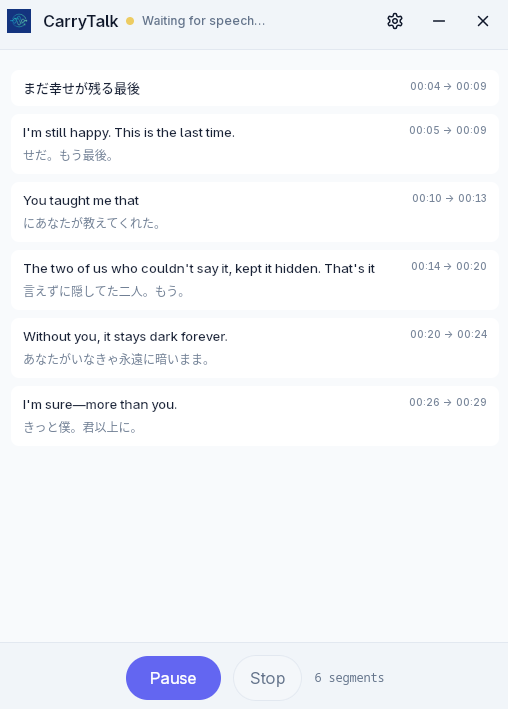
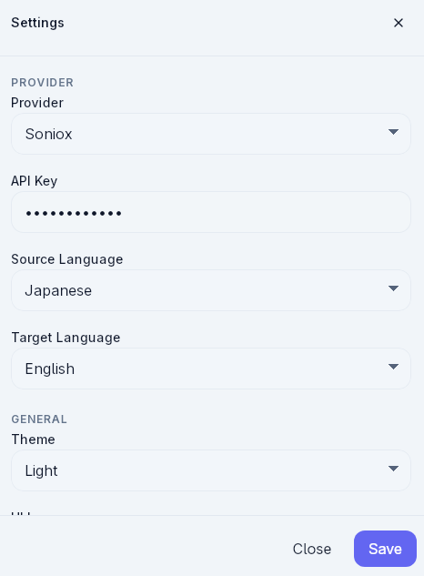

The problem
Live conversations, calls, and videos move quickly. It is easy to miss context, lose translated meaning, or rely on tools that do not keep a usable local record.
Portable desktop app for live language workflows
CarryTalk helps you capture speech from your microphone, system audio, or both, then follow live transcription and translation in one focused desktop interface.


Problem → Solution
Live conversations, calls, and videos move quickly. It is easy to miss context, lose translated meaning, or rely on tools that do not keep a usable local record.
CarryTalk combines real-time transcription, translation, flexible audio capture, and local session persistence so you can follow what is happening now and recover the session later when needed.
Features
Follow incoming speech as transcript segments update live during an active session.
Enable translation and track translated text alongside the original transcript flow.
Start, pause, resume, and stop sessions without leaving the main recording workflow.
Capture from microphone, system audio, or mixed input depending on your setup.
Transcript segments include timing data so sessions remain easier to review and trace.
Session data is stored locally and interrupted sessions can be recovered on the next app startup.
Use cases
Keep up with spoken details and revisit a locally saved transcript after the session.
Use system or mixed capture when audio comes from your computer output.
Watch original and translated text together while the conversation is still happening.
Return to timestamped transcript records without depending on a browser tab staying open.
Run a desktop-first workflow that keeps app settings and session data on the local machine.
How it works
Select microphone, system audio, or mixed capture, then pick the available devices.
Begin recording and watch the app move through its active session states.
Read live transcript updates with translated text when translation is enabled.
Keep control over the session lifecycle and rely on local persistence and recovery support.
Why CarryTalk
The app is built as a desktop application and stores runtime data locally.
It is designed around real-time listening, session state handling, and active transcript updates.
Interrupted sessions are not treated as disposable, which makes the workflow more resilient.
The interface already supports English and Vietnamese, matching the product’s current language setup.
Open-source / GitHub
CarryTalk is available on GitHub. The safest calls to action today are browsing the repository, downloading published releases, or building from source in your own environment.
FAQ
CarryTalk is a Tauri desktop app for portable real-time transcription and translation.
Yes. The app includes microphone, system audio, and mixed capture modes, depending on runtime support in the environment.
Yes. The current app flow includes start, pause, resume, and stop controls for sessions.
Yes. Session data is persisted locally, and the app includes startup recovery for interrupted sessions.
Yes. The application already includes English and Vietnamese UI support.
Use the GitHub repository, GitHub Releases, or build from source. Those are the safest public entry points confirmed for the project right now.
Get started
CarryTalk is best explored as an open desktop project: inspect the code, review the release page, and run it locally when it fits your workflow.